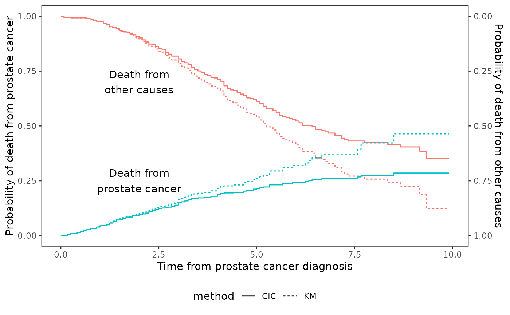

Compare cumulative incidence to th Kaplan-Meier estimate
Usage
ggcmprsk2(
x,
data,
id = c("disease", "other"),
se = FALSE,
xpos = c(2, 2),
ypos = c(0.25, 0.7),
ylabs = NULL,
xlab = NULL,
label = NULL,
plot = TRUE
)
Arguments
- x
A formula as time+status~1
- data
A data.frame
- id
Character vector of length2
- se
logical whether or not show confidence interval
- xpos
numeric x-axis position of label
- ypos
numeric y-axis position of label
- ylabs
string vector of length 2. y axis labels
- xlab
A character. The x-axis label
- label
string vector of length 2. Label names
- plot
logical Whether or not print plot
Value
A list containing the following components:
- df
A long-form data.frame consist of time, est, upper,lower, id, method
- df3
A data.frame for label consist of x, y, label, id
- p
A ggplot object
Examples
require(dplyr)
data(prostateSurvival,package="asaur")
prostateHighRisk <- prostateSurvival %>%
filter(grade=="poor" & stage=="T2",ageGroup=="80+")
ggcmprsk2(survTime/12+status~1,data=prostateHighRisk,
id=c("prostate cancer","other causes"))
